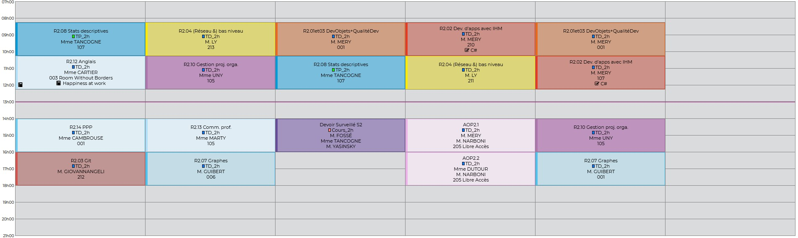

Aux alentours du BUT informatique, vous pourrez retrouver 2 restaurants CROUS dont un à seulement 3min de marche mais également de nombreux fast food.
Nous retrouvons également de nombreuses infrastructures sportives permettant ainsi de faire du sport en liberté ou rejoindre l'une des AOP de sport proposé par la formation qui correspond à un club universitaire.
Les bus sont également assez fréquent et se situe à l'entré de l'IUT permettant ainsi un déplacement pratique pour les étudiants.
Nous retrouvons également de nombreuses infrastructures sportives permettant ainsi de faire du sport en liberté ou rejoindre l'une des AOP de sport proposé par la formation qui correspond à un club universitaire.
Les bus sont également assez fréquent et se situe à l'entré de l'IUT permettant ainsi un déplacement pratique pour les étudiants.
Voici l'emploie du temps d'une semaine pour un étudiants en 1er année, bien sur l'emploi du temps peux changer d'une semaine à une autre.
